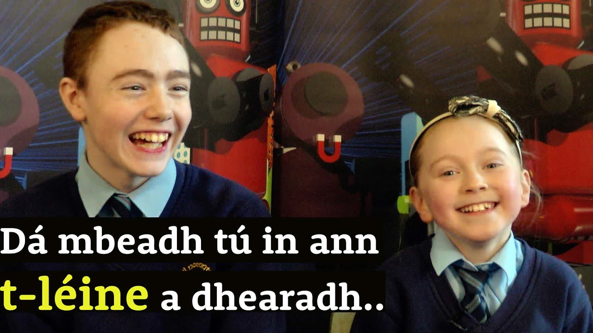
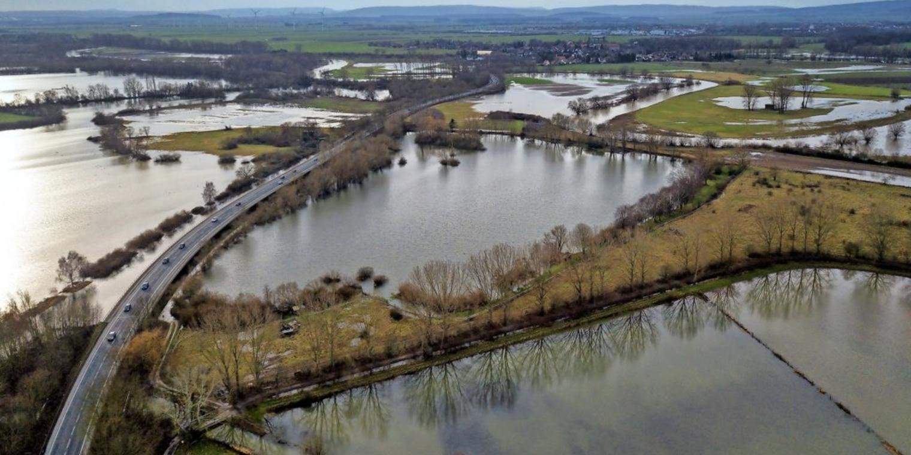

T-Léine: Gaeilge – An Siopa Leabhar
 Skip to content Roghchlár Siopa An Fáinne Aos Óg Déaglitríocht Cártaí Ceol Táirgí nua Athlámh / Seoda Fúinn Teagmháil Eolas do Thuistí Glaoigh orainn/Call us: +353 (0) 1 478 3814 Ciseán 0
Níl táirge ar bith sa chiseán.
Facebook Twitter Instagram Gaeilge English Mionchuardach Roghchlár Siopa An Fáinne Aos Óg Déaglitríocht Cártaí Ceol Táirgí nua Athlámh / Seoda Fúinn Teagmháil Eolas do ThuistíLéim chuig Catagóir
Roghnaigh catagóir An Fáinne agus Earraí CNAG An Nollaig Aos Óg / 5+ Aos Óg / 8+ Aos Óg / Déaglitríocht Aos Óg / Pictiúrleabhair Leabhair amhrán Leabhair Chairtchláir Leabhair Mhóra Ar Athláimh / Seoda Bunscoil Naíonáin Bheaga Naíonáin Mhóra Rang 1 Rang 2 Rang 3 Rang 4 Rang 5 Rang 6 Cártaí Ag smaoineamh ort Biseach ort Breithlá Buíochas Cártaí Nollag Céad Chomaoineach Cóineartú Comhbhrón Comhghairdeachas Go n-éirí leat Grá / Bainiseacha Lá na Máithreacha Lá na nAithreacha Leanbh nua / Baisteadh Teach nua Ceol Cluichí Dearbháin don Siopa Drámaíocht Éadaí Geansaithe / Cochaill T-léinte Earraí Eile Féilirí agus dialanna Féiríní agus Earraí Tí Ficsean Aistrithe go Gaeilge Aistrithe ón nGaeilge Clasaicí Foghlaimeoir Fásta Gearrscéalta Úrscéalta Úrscéalta Grafacha Filíocht Foghlaim agus Feabhas Féinmhúineadh Foclóirí Stór Focal Ilmheáin Dioscaí DVDanna Irisí An Timire Carn Comhar Eipic Feasta Mionlach Leabhair Dhátheangacha Leabhair i mBéarla Margaí Speisialta Meánscoil Sraith Shinsearach Sraith Shóisearach Scoileanna T1 Scoileanna T2 Neamhfhicsean Ainmneacha Beathaisnéis Canúintí agus Ceantair Creideamh Stair Earraí 1916-2016 Finscéalta agus Béaloideas Taighde Taisteal Póstaeir Séideán Sí Naíonáin Bheaga Naíonáin Mhóra Rang 1 Rang 2 Rang 3 Rang 4 Rang 5 Rang 6 Táirgí Nua Réamheolas agus RéamhorduitheBrabhsáil de réir catagóirí
An Nollaig An Fáinne agus Earraí CNAG Aos Óg / 5+ Aos Óg / 8+ Aos Óg / Déaglitríocht Aos Óg / Pictiúrleabhair Leabhair amhrán Leabhair Chairtchláir Leabhair Mhóra Ar Athláimh / Seoda Bunscoil Naíonáin Bheaga Naíonáin Mhóra Rang 1 Rang 2 Rang 3 Rang 4 Rang 5 Rang 6 Cártaí Lá na nAithreacha Ag smaoineamh ort Biseach ort Breithlá Buíochas Cártaí Nollag Céad Chomaoineach Cóineartú Comhbhrón Comhghairdeachas Go n-éirí leat Grá / Bainiseacha Leanbh nua / Baisteadh Lá na Máithreacha Teach nua Ceol Cluichí Dearbháin don Siopa Drámaíocht Éadaí T-léinte Earraí Eile Féilirí agus dialanna Féiríní agus Earraí Tí Ficsean Aistrithe go Gaeilge Aistrithe ón nGaeilge Clasaicí Foghlaimeoir Fásta Gearrscéalta Úrscéalta Úrscéalta Grafacha Filíocht Foghlaim agus Feabhas Stór Focal Féinmhúineadh Foclóirí Ilmheáin Dioscaí DVDanna Irisí An Timire Carn Comhar Eipic Feasta Leabhair Dhátheangacha Leabhair i mBéarla Margaí Speisialta Meánscoil Sraith Shinsearach Sraith Shóisearach Scoileanna T1 Scoileanna T2 Neamhfhicsean Ainmneacha Beathaisnéis Canúintí agus Ceantair Creideamh Stair Earraí 1916-2016 Finscéalta agus Béaloideas Taighde Taisteal Póstaeir Séideán Sí Naíonáin Bheaga Naíonáin Mhóra Rang 1 Rang 2 Rang 3 Rang 4 Rang 5 Rang 6 Táirgí Nua Réamheolas agus RéamhorduitheT-Léine: Gaeilge
SKU: N/A Catagóirí: An Fáinne agus Earraí CNAG , T-léinte Cur síos Eolas breise
Cur síos
T-Léine dhubh agus ‘Gaeilge’ uirthi, ar an gceithre thaobh de bhratach dronuilleogach. Roghnagh toise agus líon t-léinte anseo thíos.
Eolas breise
Meáchan 0.3 kg ToiseAn-Mhór, Beag, Meánach, Mór
Related products
An Seanfháinne
€ 5.00 Cuir sa chiseán éCosanta: Cultúr Club: Leabhráin
€ 2.50 – € 15.00 Rogha le déanamhAn Fáinne Óir
€ 4.00 Cuir sa chiseán éT-Léine: Polcaphonc (Beag)
€ 10.00 Cuir sa chiseán éPraghas
Meáchan:0.3 KG:
Foilsitheoir:Conradh na Gaeilge
Pacáiste Gaeilge24 2020 (Réamhordú) € 10.00 Rogha le déanamh T-Léine: Ar Mhuin na Muice € 25.00 Rogha le déanamh T-Léine Gaeilge24 2019 Léigh tuilleadhSonraí teagmhála
An Siopa Leabhar
6 Sráid Fhearchair
Baile Átha Cliath 2
D02 VH98
Guthán: 01 478 3814
Ríomhphost: siopa@cnag.ie
Uaireanta Oscailte
Luan go hAoine:
09:30 go 17:30
Satharn:
10:00 go 16:00
Domhnach:
Dúnta
Léim chuig Catagóir
Roghnaigh catagóir An Fáinne agus Earraí CNAG An Nollaig Aos Óg / 5+ Aos Óg / 8+ Aos Óg / Déaglitríocht Aos Óg / Pictiúrleabhair Leabhair amhrán Leabhair Chairtchláir Leabhair Mhóra Ar Athláimh / Seoda Bunscoil Naíonáin Bheaga Naíonáin Mhóra Rang 1 Rang 2 Rang 3 Rang 4 Rang 5 Rang 6 Cártaí Ag smaoineamh ort Biseach ort Breithlá Buíochas Cártaí Nollag Céad Chomaoineach Cóineartú Comhbhrón Comhghairdeachas Go n-éirí leat Grá / Bainiseacha Lá na Máithreacha Lá na nAithreacha Leanbh nua / Baisteadh Teach nua Ceol Cluichí Dearbháin don Siopa Drámaíocht Éadaí Geansaithe / Cochaill T-léinte Earraí Eile Féilirí agus dialanna Féiríní agus Earraí Tí Ficsean Aistrithe go Gaeilge Aistrithe ón nGaeilge Clasaicí Foghlaimeoir Fásta Gearrscéalta Úrscéalta Úrscéalta Grafacha Filíocht Foghlaim agus Feabhas Féinmhúineadh Foclóirí Stór Focal Ilmheáin Dioscaí DVDanna Irisí An Timire Carn Comhar Eipic Feasta Mionlach Leabhair Dhátheangacha Leabhair i mBéarla Margaí Speisialta Meánscoil Sraith Shinsearach Sraith Shóisearach Scoileanna T1 Scoileanna T2 Neamhfhicsean Ainmneacha Beathaisnéis Canúintí agus Ceantair Creideamh Stair Earraí 1916-2016 Finscéalta agus Béaloideas Taighde Taisteal Póstaeir Séideán Sí Naíonáin Bheaga Naíonáin Mhóra Rang 1 Rang 2 Rang 3 Rang 4 Rang 5 Rang 6 Táirgí Nua Réamheolas agus Réamhorduithe Teagmháil Fúinn Téarmaí agus Coinníollacha © An Siopa Leabhar Tá fianáin in úsáid ar an suíomh idirlín seo. Má leanann tú ort ag baint úsáid as an suíomh, glacfar leis go bhfuil tú sásta leis an bpolasaí fianán. Ceart go leor